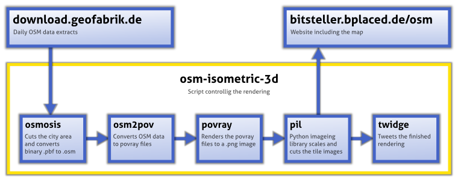

Isometric 3D maps
based on OpenStreeetMap data
Isometric 3D maps of some cities
The following (mostly) german cities have been rendered as isometric 3D maps based on OpenStreetMap data:
| City | Last update | ||
|---|---|---|---|
 Loading... Loading... | (Javascript has to be enabled) |
The OSM data of the renderings might be up to 5 days older than the rendering date.
To get notified when a new rendering is finished:
osm-isometric-3d
osm-isometric-3d is the webfrontend and script for generating and uploading the above maps and this website automatically. The script is written in Python and Javascript for the webfrontend.
How it works: 
System requirements: Unix (Linux, Mac OS), at least 2 GB of RAM. The script needs the tools osmosis, osm2pov (see below), povray installed to run properly (for details see the README file). The webfrontend uses the LeafletJS library.
Latest changes:
More information: http://github.com/bitsteller/osm-isometric-3d
osm2pov
osm2pov converts OpenStreeetMap data files to povray files, that can be rendered with povray. The code that is used for the above renderings can be found at http://github.com/bitsteller/osm2pov, which is a fork of http://github.com/guerda/osm2pov. The code is released under the GPL v3.
Latest changes:
More information: http://osm.kyblsoft.cz/3dmapa/